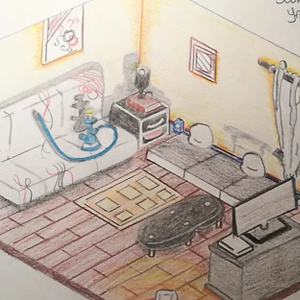
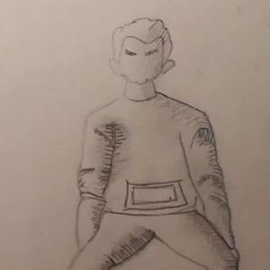
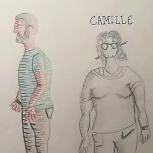
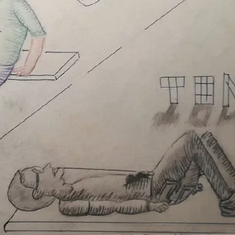
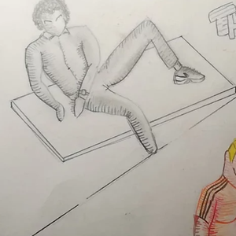

For this first drawing I decided to reproduce a lifeless object that does not move. For this a figurine of the famous Michelin man did the trick. The tools used are a pencil and the print to make shadows and lights.
This drawing made with isometric figure shows my apartment drawn from an angle while keeping isometric good practices of drawing through tiles. I have, in addition to the pencil paper used colors of warm tone to recall the friendliness.
This is a drawing of a human body in a particular situation. We can notice that there is a play of shadow and light which makes the drawing with more relief.
The same goes for this one which has a pencil body and another with a color range (3 colors that comes close in tint).
Here we have an identical design l to the first body but with more marked and fatter features. So, for example there are additions of pencil strokes for the glasses. The goal is to make a level of grey.
This last drawing marks the end of this series. It is simply a pencil drawing but with a more complicated position because the limbs are not straight.